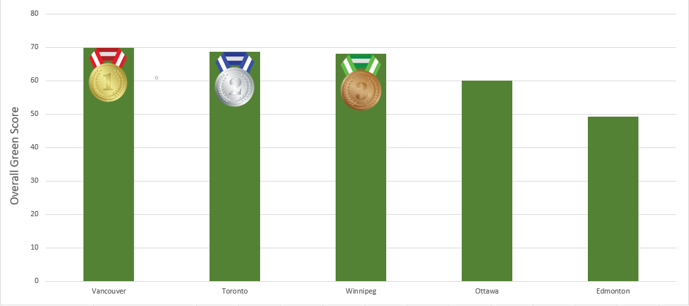

Ever wondered how green your home city is compared to other cities in Canada? Look no further, the (fictious) Canadian Green Score City index measures the urban footprints from natures prospective.
It is based on The Green Score City Index, an ongoing empirical study of the anthropogenic impact cities have on the environment, however, it focuses on the following big cities: Ottawa, Montreal, Toronto, Vancouver, Calgary, and Winnipeg.
By using comparative indicators, the index portrays the socio-ecological strengths and weaknesses of each of these cities. Finally, by normalizing and aggregating the scores of these indicators, a final green score is produced for each city.
The indicators:
The Canadian Green Score city index focuses on indicators such as population, transportation, water, electricity usage, and waste production. The following 8 indicators were used in this index to calculate the final scores.
1. Population impact: Population count. Smaller populations have smaller footprints since they require less space for residential, commercial, industrial, recreational, and other human activities.Lower is better.
2. Waste:Total tonnage of garbage before the recycling redirect percentage (in ton). Lower is better.
3.Travel to work by: Measures a population’s usage of public transit, cycling, and walking commuting habits in percentage. Higher is better.
4. Domestic water usage: Water usage for the city’s population in Litres/cap/day. Lower is better.
5. GHG Emissions: Cities are now expected to report GHG emissions to provincial or federal government agencies. Measures each city's GHG emissions in megaton. Lower is better.
6. Clean electrical capacity: A calculated percentage of clean electrical capacity for each city. Higher is better.
7. Recycling diversion rate: Percentage of waste that is recycled and redirected away from landfills. Higher is better.
8. Organic waste tonnage: Total organic matter collected by a city from all sources (in ton). Higher is better.
9. Park Count: Total count of parks in a city. More parks leads to greater residential accessibility, proximity and higher usage. Higher is better.
10. Municipal area: Measured in square km. Larger municipal boundaries create larger city footprints. Smaller is better.
Vancouver wins the crown for the greenest city with a total score of 69.9. Toronto comes in at second place with a score of 68.8 and lastly Winnipeg in third with a score of 68.0.
In the face of of an everchaning climate, these Canadian cities are all paving the way to a climate resilient future
Green City Ranking

Note: The data utilized was obtained and calculated for Greenscore City Index. As explained in the results section, some of the scores does not accurately represent the data. Therefore, the (fictious) Canadian Green Score City index and the presented data should be taken with skepticism and not be repurposed for research or educational purposes.
For more information on where the data was obtained and how the scores were calculated and normalized, visit: GreenScore City Index Release Notes
Leave a Comment:
Dipto
Wow amazing! I expected nothing less from my favourite group! I wonder who taught you to make these amazing SVGs.
Gillian
Now that the LRT is up and running hopefully more people will green commute in Ottawa :)
Yussuf
God I hate the LRT
Didier
Hopefully the LRT expansion will open at Carleton soon